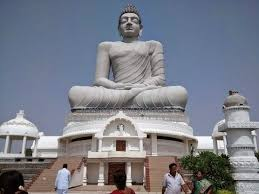
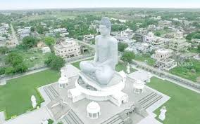
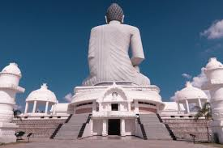
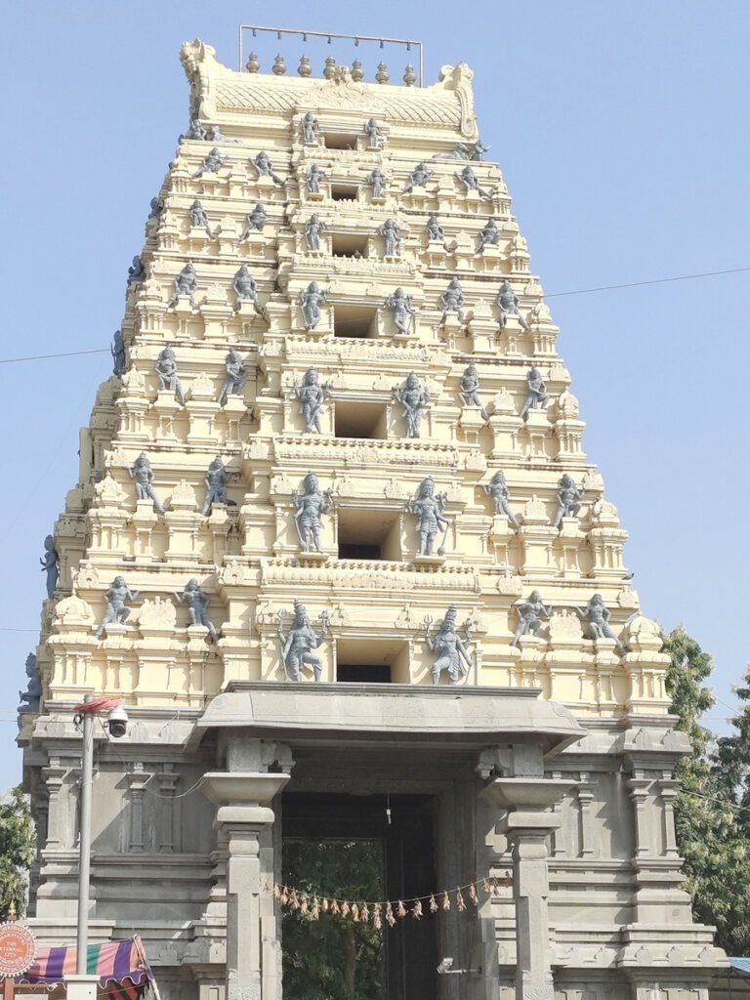
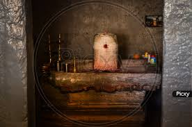
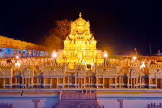
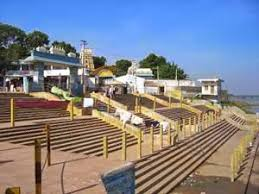
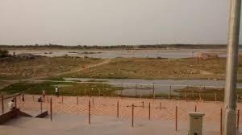
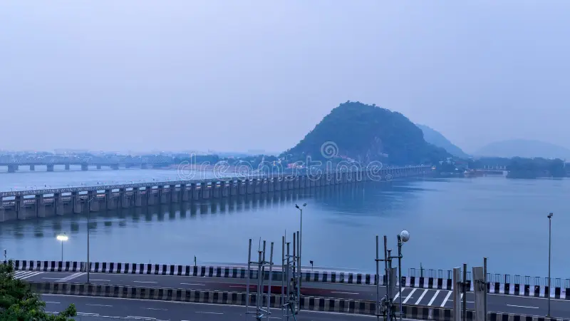
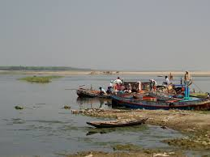

These are the tourist palces must visit in Amaravathi
Dhyana Buddha Statue



The Dhyana Buddha is a statue of Gautama Buddha seated in a meditative posture located in Amaravathi, Andhra Pradesh, India.[1] Completed in 2015, the statue is 125 ft (38 m) tall and is occupies a 4.5-acre site on the banks of the Krishna River.[2] It is embellished with modern reproductions of sculptures from the Amaravati School of art which flourished in the region from 200 BC to 200 AD.
Amaralingaswara Temple




Amararamam is a Hindu temple dedicated to Lord Siva, located in Amaravathi of Palnadu district in the Indian state of Andhra Pradesh. It is one of the five sacred Pancharama Kshetras and is unique for being situated on the Krishna River, unlike the others in the Godavari region. The temple enshrines a 15-foot white marble Sivalinga, and daily rituals are performed by priests on a platform. The main deity, Lord Amareswara (also known as Amaralingeswara), is accompanied by his consort, Bala Chamundika.[1]
The temple, based on epigraphical and historical evidence, is believed to have originated in the 11th century, with the earliest inscription dating back to 1129 CE.[2] The temple has been patronized by various dynasties, including the Kota chiefs, and the Vijayanagara Empire, with notable contributions from Sri Krishnadevaraya.[3] Major renovations were carried out in the late 18th century.
Krishna River Ghat



The Krishna River in the Deccan plateau is the third-longest river in India, after the Ganga and Godavari. It is also the fourth-largest in terms of water inflows and river basin area in India, after the Ganges, Indus and Godavari.[5] The river, also called Krishnaveni, is 1,400 kilometres (870 mi) long and its length in Maharashtra is 282 kilometres.[6] It is a major source of irrigation in the Indian states of Maharashtra, Karnataka, Telangana and Andhra Pradesh